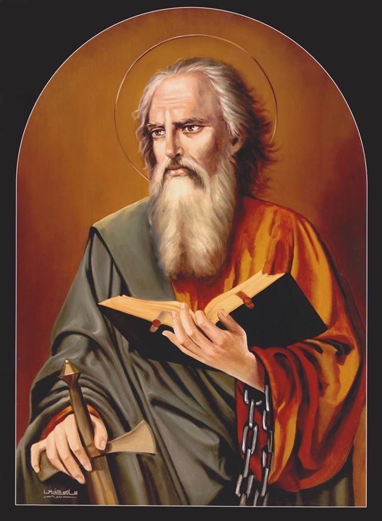
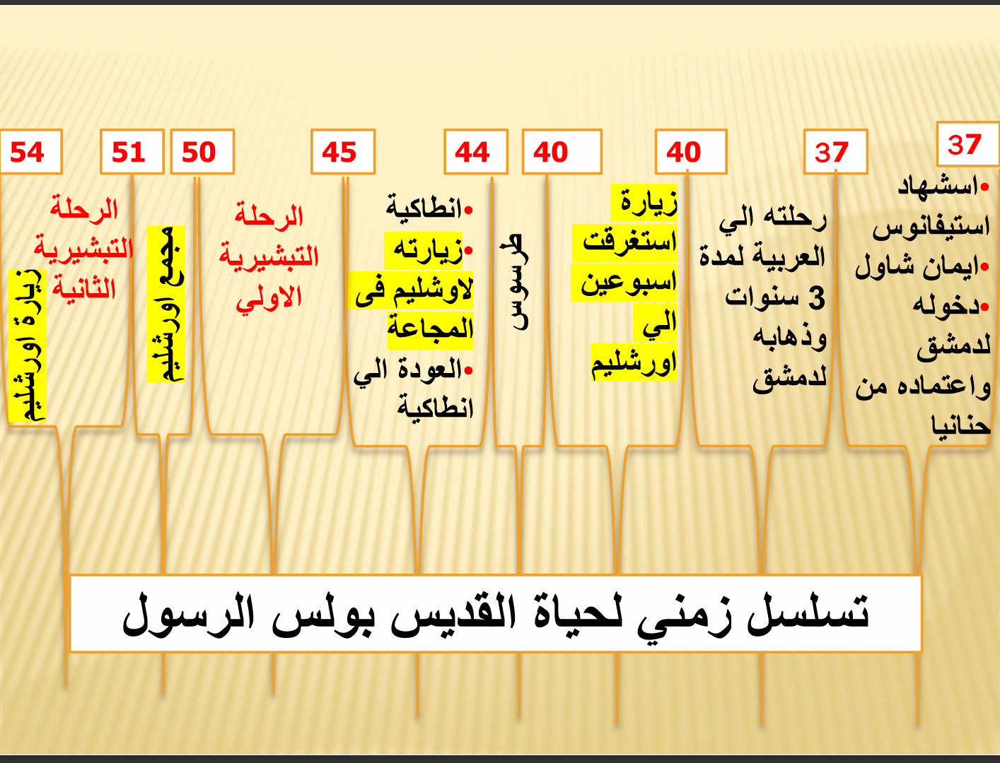
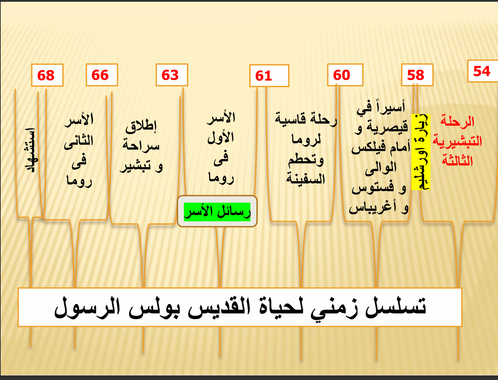

نبذه عن القديس بولس
هناخد هنا حبه معلومات عن مين هو بولس الرسول و ايه حكايته و يعدها نتطرق لرحلاته التبشيري
هناخد هنا حبه معلومات عن مين هو بولس الرسول و ايه حكايته و يعدها نتطرق لرحلاته التبشيري
في البداية كان اسمه العبري "شاول الطرسوسي" وكلمة شاول دي معناها "المطلوب"، وَاتَسَمَّى بالاسم ده في سفر الأعمال (أع 13: 9) حيث قيل "أما شاول الذي هو بولس أيضًا" ، ومن وقتها والناس عرفته باسم بولس، ومعناه "الصغير". فيه ناس قالت إنه سمى نفسه كده على اسم والي قبرص "سرجيوس بولس"، بس الكلام ده بعيد خالص عن الصح؛ الحقيقة إن شاول كان زيه زي يهود كتير وقتها ليهم اسمين، اسم عبري وسط أهله واسم أممي يتعامل بيه مع الأجانب (أع 1: 23؛ 12: 12؛ كو 4: 11) اتولد في مدينة "طرسوس" في ولاية كيليكية، ودي كانت حتة تابعة للإمبراطورية الرومانية، وقضى طفولته هناك. ومن فكرة إنه كان معاه "الجنسية الرومانية" بالولادة (أع 22: 25-29)، نفهم فوراً إنه كان ابن ناس، من عيلة شريفة ومبسوطة مادياً وليها نفوذ (رو 16: 7، 11)، ده حتي ابن أخته كان "واصل" لدرجة إنه عرف سر مؤامرة كانت بتتدبر ضده وبلغه بيها، وده يخلينا نشك إنه كان شغال في منصب مهم أو ليه معارف في مراكز حساسة. وبولس كان "ثقيل" جداً وسط القادة اليهود وفي "السنهدريم" (أع 9: 1-2؛ 22: 5؛ في 3: 4-7).، وده يوريك قد إيه كان ليه وضع اجتماعي عالي. أما من الناحية الدينية، فا ابوه كان "فريسي" من سبط بنيامين، وبولس طلع زيه بالظبط، اتربى تربية دينية ناشفة جداً وعلى أدق تفاصيل الشريعة، ومع كل ده كان برضه متمسك بميزته إنه مواطن روماني حر

أول ظهور لبولس في الكتاب المقدس كان في مشهد صعب شوية، وهو رجم استفانوس (أعمال 7: 58)؛ وقتها الشهود قلعوا هدومهم وحطوها تحت رجل شاب اسمه "شاول"، وده مع اللي جه بعد كده في (أعمال 8: 1) بيوريك إنه كان راجل ليه كلمة ومركز، وكان موافق تماماً على قتل استفانوس، وغالباً كان هو واحد من الناس اللي اتذكروا في (أعمال 6: 9) اللي قعدوا يجادلوا استفانوس ويجهزوا ضده التهم. في الفترة دي، شاول كان شخص متعصب جداً، ومكنش طايق فكرة إن "المصلوب" ده هو المسيا، وكان شايف إن أتباعه بيمثلوا خطر كبير على الدين والبلد. و كان بيضطهد المسيحيين و بيعمل كده وهو ضميره مستريح جداً، ومقتنع إنه بيخدم ربنا وشريعته، فكان بيبذل مجهود جبار عشان يخلص على الجماعة دي أو يخليهم يرجعوا عن طريقهم، زي ما حكى هو عن نفسه في (أعمال 8: 3؛ 22: 4؛ 26: 10-11) وفي رسائله (1 كورنثوس 15: 9؛ غلاطية 1: 13؛ فيلبي 3: 6؛ 1 تيموثاوس 1: 13). الموضوع معاه مكنش مجرد واجب، ده كان بيطارد المسيحيين بمنتهى القسوة والغل، وما اكتفاش بـ "أورشليم" بس، ده طلع وراهم يلاحقهم في البلاد اللي بره كمان، وكل ده وهو متخيل إنه كده بيعمل الصح وبيرضي ربنا والناموس
في عز الضهر، ظهر نور قوي جداً من السما حوالين القديس بولس لدرجة إنه وقع على الأرض (أع 9: 3). والناس اللي معاه وقفوا مذهولين، سامعين صوت (أع 9: 7) بس مش فاهمين الكلام (أع 22: 9). لما الرب قاله "صعب عليك أن ترفس مناخس"، كان قصده إن محاولاتك لمقاومة الحق والاضطهاد اللي بتعمله ده مش بيأذي غيرك أنت، زي الثور اللي بيرفس المسمار فيوجع نفسه زيادة. ده بيأكد إن القديس بولس كان بيمر بصراع داخلي وضميره "بينخسه" وتساؤلاته عن المصلوب مش بتسيبه، خصوصاً بعد ما شاف ثبات الشهيد استفانوس (أع 22: 20). في اللحظة دي، القديس استجاب للدعوة بكل صدق واتولد ولادة ثانية. الحادثة دي حقيقة متوثقة ذكرها لوقا البشير (أع 9: 3-32)، والقديس بولس كررها مرتين (أع 22: 1-16؛ 26: 1-26)، وأشار ليها في رسايله بوضوح (1 كو 9: 1؛ 15: 8-10؛ غل 1: 12-16؛ اف 3: 1-8؛ في 3: 5-7؛ 1 تي 1: 12-16؛ 2 تي 1: 9-11). الرب يسوع ظهرله وشافه بعينه (أع 9: 17، 27؛ 22: 14؛ 26: 16؛ 1 كو 9: 1)، واللقاء ده خلاه يتأكد إن يسوع هو ابن الله الحي وفادي البشرية (أع 26: 19). الموضوع مكنش تخيلات، ده كان واقع سمعه وشافه، وعاش حياته كلها بيشهد للحق ده واستحمل التعب بصبر لحد الآخر (2 تي 4: 7-8).


لعبه صغيره عشان المعلومه تثبت بس قبل ما تدخل قول يارب تشتغل عشان مش بعرف اعمل العاب بامانه مكدبش عليك يعني
ابدأ اللعبة الآن 🎮